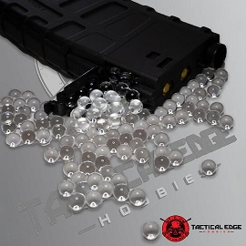

Buying a Gel Blaster
Important notice
In Gold Coast and all of Queensland, gel blasters are perfectly legal. Owning one requires no license, and there is no age requirement for one. However, it is INCREDIBLY IMPORTANT to note that in ALL OTHER STATES AND TERRITORIES OF AUSTRALIA owning a gelblaster is ILLEGAL. Failure to recognise this law can result in SERIOUS PENALTIES AND IMPRISONMENT.
Where to go
After ensuring that you live in Queensland, buying a gel blaster is simple. You can buy them at an online shop, the best ones being either Tactical Edge Hobbies or TacToys (my personal preference is Tactical Edge). These places sell a huge variety of gel blasters, and deliver to any Queensland doorstep.
As well as that, you can buy them at any of the various shops that exist.
What's in the box
When you buy a gel blaster, you don't always just get a gun. Most novice line (ideal for beginners) blasters come with goggles and gels (ammo). As well as the actual gun itself, you can usually expect some attachments, like a laser sight/pointer or a muzzle. As well as that, pistols often come with a holster. Sometimes, you even get an extra mag, if you're lucky enough.
You also get a sheet of paper with all the laws regarding gel blasters printed on it.
Hiring packages
If you are new to the sport, and aren't sure if you are really going to enjoy it (and therefore don't want to buy a blaster), then maybe a hire package is for you. Normally, fields will have a hire package designed for their field. Here is an example of a hiring package from Gelsoft Australia.
Included in the package:
- A standard M4A4 novice line blaster - M4A4s are typical black rifles.
- A full face shield, designed to protect your entire face while maintaining breathability and visibility.
- A speedloader - a black bottle with a thin nozzle that can be filled with gels and used to refill magazines.
- Unlimited orange gels - medium softness, relatively painless orange gels that are designed to go in the included blaster.
- A mag coupler with two bonus mags - meaning you have a total of 3 magazines at your disposal. Note magazines can be easily refilled once drained.
- Two 7.4v batteries, so if your blaster runs flat you can just swap the battery out for the spare.
This package costs just $25, but can only be used at the range they are sold, and for one session only.
Gels
Buying a gel blaster and a ticket isn't quite enough. There is still one essential part of your shopping list that allows you to have the gel blasting experience. But don't worry - it is the cheapest part of all (even cheaper than the tickets!). The gels.
The gels come in many types, and below are the main 4 types (Click the images to go to the purchase pages).
Clear Gels |
White Gels |
Orange Gels |
Hardened Gels |
|---|---|---|---|
$5.00 |
$5.00 |
$5.00 |
$7.50 |
|
 |
|||
|
|
|
|
Click the image below to see a guide on preparing your gels.